Manage, Read and Report News
UX/ UI
I wanted to create an app that displayed accurate news. My approach to achieving this was to build it using smart contracts on the Ethereum Network. The choice to use a decentralised app infrastructure was due to the data being immutable and transactions being a fraction of fiat currency. This is not achievable using third party payment systems today. My thought was that if a service allowed you to share updates on the world around you and encouraged users to donate to promote the notions they found accurate; a space could be created without spam and more accurate news. However, I soon discovered that this was a very ambitious feat; partly due to physical limitations of the EVM and blockchain technology and partly because of underestimating human behaviour. I was still interested in seeing how I could design the user-experience with a suitable user-interface to achieve such a goal so I decided to create this as a full UX/UI project with descriptions of first-approach, basic application architecture.
Creating a User:
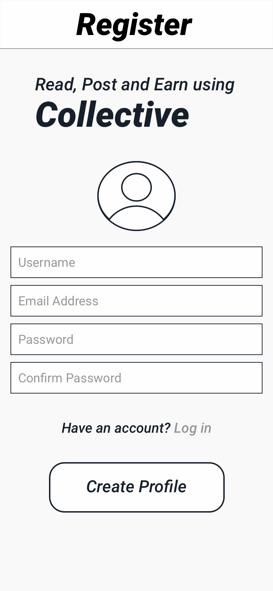
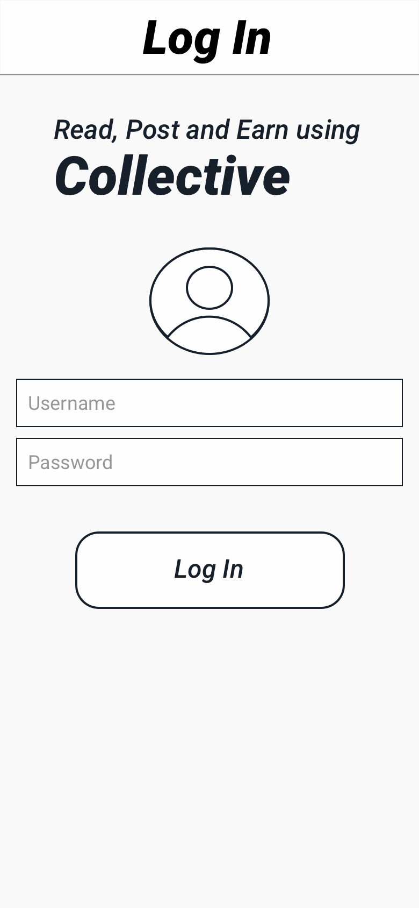
Users register with username, email and password. The user data is a one-to-many relationship where one user has many Feeds and Posts.
Creating a Post:
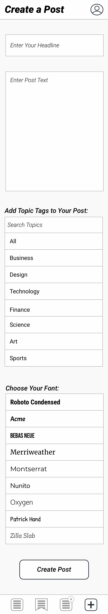
The Post model contains fields which include: headline, textBody, topicTags, timeCreated, balance and fonts. Headlines are the initial thing users read, which are displayed on the user interface of the Feed in full- this is achieved by setting a character limit. The textBody is the content of the post. topicTags are used to sort the Post accordingly using a Sort Function when viewing a feed. Fonts are used to personalise your post (this would not be included in the MVP design of the app.) timeCreated is a value which is used along with balance in a calculation to determine the popularity of the Post. Balance is the recorded amount of donations to the Post. Each Post has its own id.
Viewing a Post:
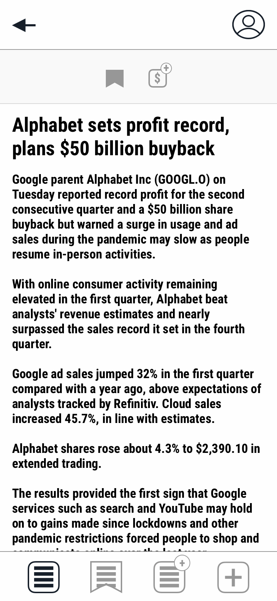
The headlines and a portion of the Post’s body can be seen when looking at a Feed. The higher rated posts reveal larger amounts of the Post’s Text Body. Clicking on the Post takes you to the Show Post page where the entirety of the post can be seen along with the option to save and donate to the Post.
Creating a Feed:
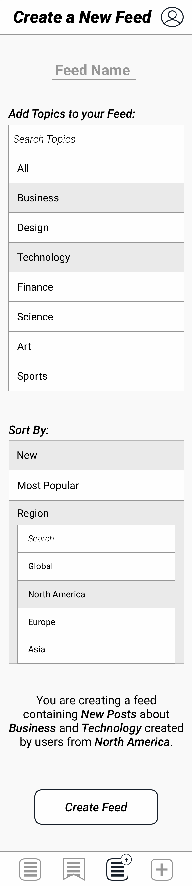
The Feed model has fields which include topics and sortBy. On the User Interface you select what topics you would like your feed to contain, you can select multiple topics. You can choose how the created Feed is sorted using the Sort By selector. One User can create many Feeds so you can have specific Feeds dedicated to specific types of content.
Sort By Selector:
Choosing to sort by 'Popular' arranges the Posts by popularity which is done through an algorithm that determines a rate by looking at the balance of the post and dividing it by the amount of time it has been since it was created. Sorting by 'New' orders the Feed by the most recent posts only. You can also set a specific time when selecting New (in the last hour/ day/ month.)
View Feeds:
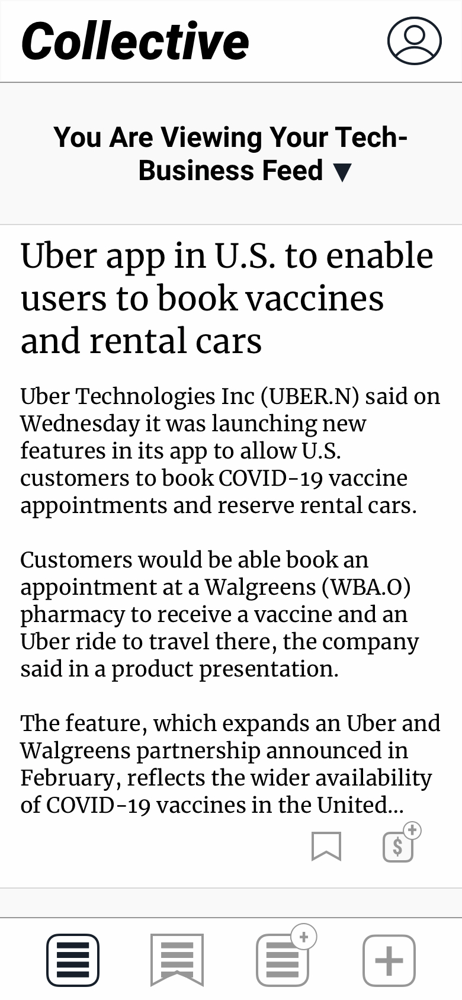
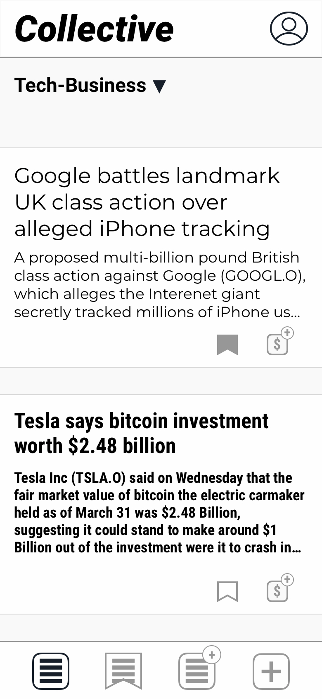
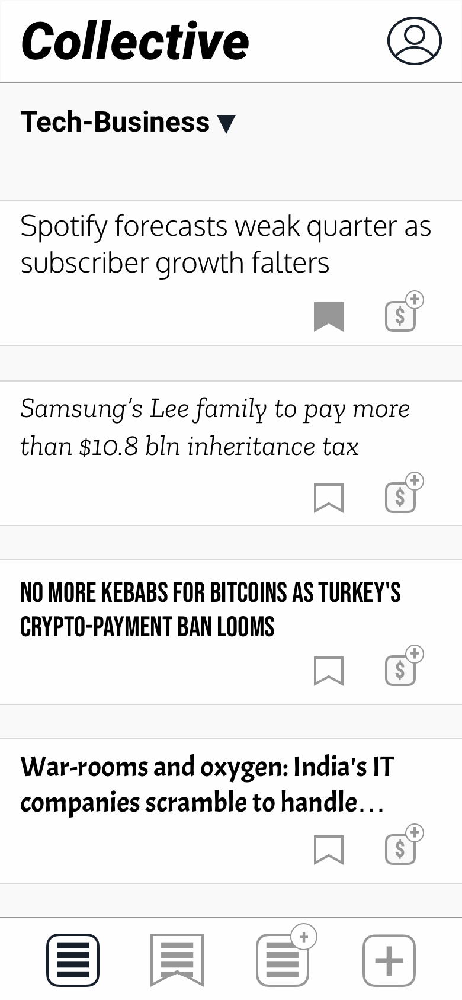
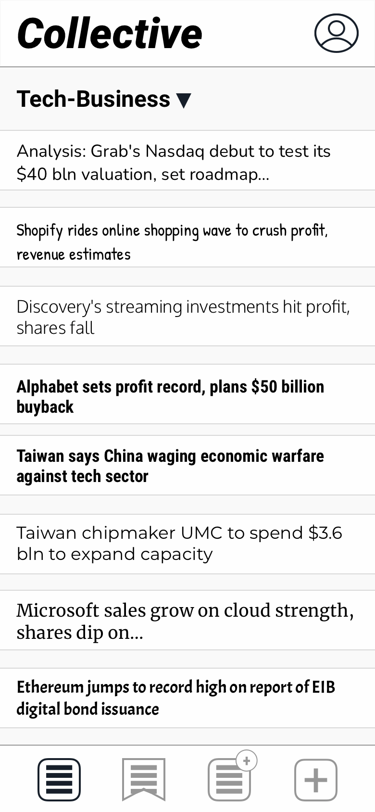
The App looks at which created Feed of yours you are viewing and renders the appropriate information. The data stored using the Feed model is processed through a sorting function and renders the HTML onto the page (React would be used for this.) The Posts are displayed continuously and are rendered On Scroll. The first Page Render contains one single post, the second contains two posts, the third contains four and from the fourth Page Render onwards displays a maximum of 8 posts. I chose to order the pages with an increasing amount of posts up to 8 to highlight the ones which were deemed ‘more important’ by the users when the feed is set to look at the most popular posts. The App uses the space of the screen to highlight importance.
Saving a Post and Saved Posts Page:
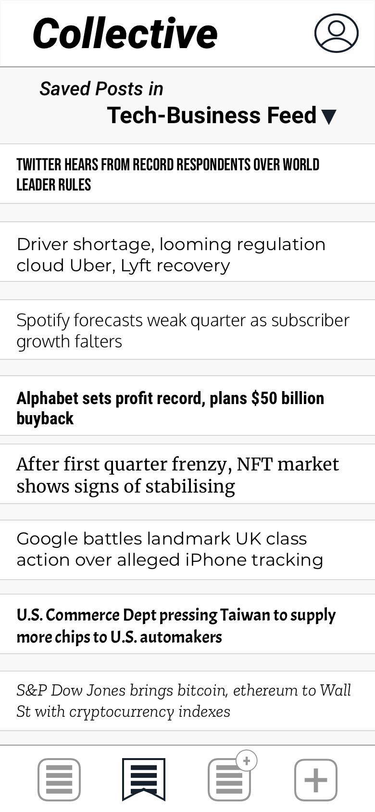
You can view saved posts by Topic, Feed or All. When viewing the Saved Posts page through a feed, a sorting function looks at only the data from the savedPosts Field of the User model which is a value of Post and renders the data the same way as the Viewing Feeds page.
Donating to Posts:
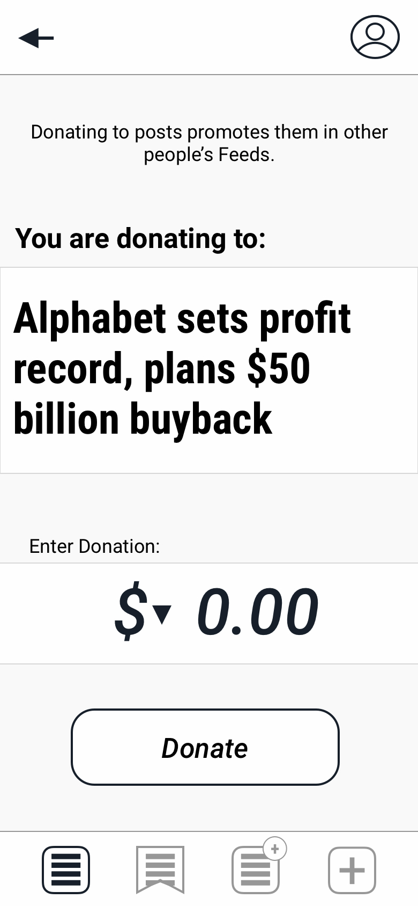
Donating to a post sends the donation to the creator of the post but is also recorded as a value of balance in the Post model. Users are encouraged to send donations to posts which they would like others to see since posts with a higher balance are arranged higher in the feed.
Analysis and Review:
I started this project with the development of smart contracts on the Ethereum Network. An account could send transactions to posts which were then sent to the creator of the post, however, problems began to arise when an attempt was made to use the blockchain data to order the posts. This is because such operations require a gas fee which would not have been economical for the users or the app itself. I suspect a solution to this problem would be to use oracles to communicate the blockchain data with the database of the application. This project shows how an auto-governed newsfeed can exist on the assumption that donations can be made easily. In reality, the donations are subject to high transaction fees which I believe are unappealing to the user. You can substitute the donation feature of the app with likes or votes but this will not display an accurate representation of reliable content as this method can be gamed. Nonetheless, I enjoyed looking at how the data can be moved around and organised using the User Interface I designed and thinking about the fluency of the User Experience.
Disclaimer: The Posts shown in this project are sample articles I collected from Reuters. Here are links to the original content from the writers:
https://www.reuters.com/business/autos-transportation/uber-app-us-enable-users-book-vaccines-rental-cars-2021-04-28/ https://www.reuters.com/technology/google-battles-landmark-uk-class-action-over-alleged-iphone-tracking-2021-04-28/ https://www.reuters.com/business/autos-transportation/tesla-says-bitcoin-investment-worth-248-billion-2021-04-28/ https://www.reuters.com/technology/spotify-results-beat-estimates-more-users-tune-2021-04-28/ https://www.reuters.com/business/samsungs-lee-family-pay-more-than-12-trln-won-inheritance-taxes-2021-04-28/ https://www.reuters.com/technology/no-more-kebabs-bitcoins-turkeys-crypto-payment-ban-looms-2021-04-28/ https://www.reuters.com/world/india/war-rooms-oxygen-indias-it-companies-scramble-handle-covid-19-surge-2021-04-28/ https://www.reuters.com/technology/grabs-nasdaq-debut-test-its-40-bln-valuation-set-roadmap-spac-hopefuls-2021-04-28/ https://www.reuters.com/technology/shopify-revenue-more-than-doubles-online-boom-2021-04-28/a> https://www.reuters.com/technology/discoverys-global-paid-streaming-subscriber-count-hits-15-mln-2021-04-28/a> https://www.reuters.com/technology/google-parent-alphabet-beats-sales-estimates-ad-spending-soars-2021-04-27/ https://www.reuters.com/technology/taiwan-says-china-waging-economic-warfare-against-tech-sector-2021-04-28/ https://www.reuters.com/technology/taiwan-chipmaker-umc-spend-36-bln-expand-capacity-2021-04-28/ https://www.reuters.com/technology/microsoft-beats-quarterly-revenue-expectations-2021-04-27/ https://www.reuters.com/technology/digital-currency-ether-hits-record-high-2021-04-27/Reddit Scraper
Search Through Subreddits Using Keywords
Python
A friend of mine approached me to create a reddit scraper for him during the GME stock boom. He wanted a way to search through posts, comments and replies in the r/wallstreetbets subreddit and return the ones containing specified financial key terms. He wanted this done quickly so I drew up this solution for him overnight.
I used the PRAW module in Python to use the Reddit API and then converted the data into an excel spread sheet to send on to him. If I were to have more time, I would have designed my own API and a web page interface for the users (in this case my friend) to input the keywords and search through the selected subreddit.
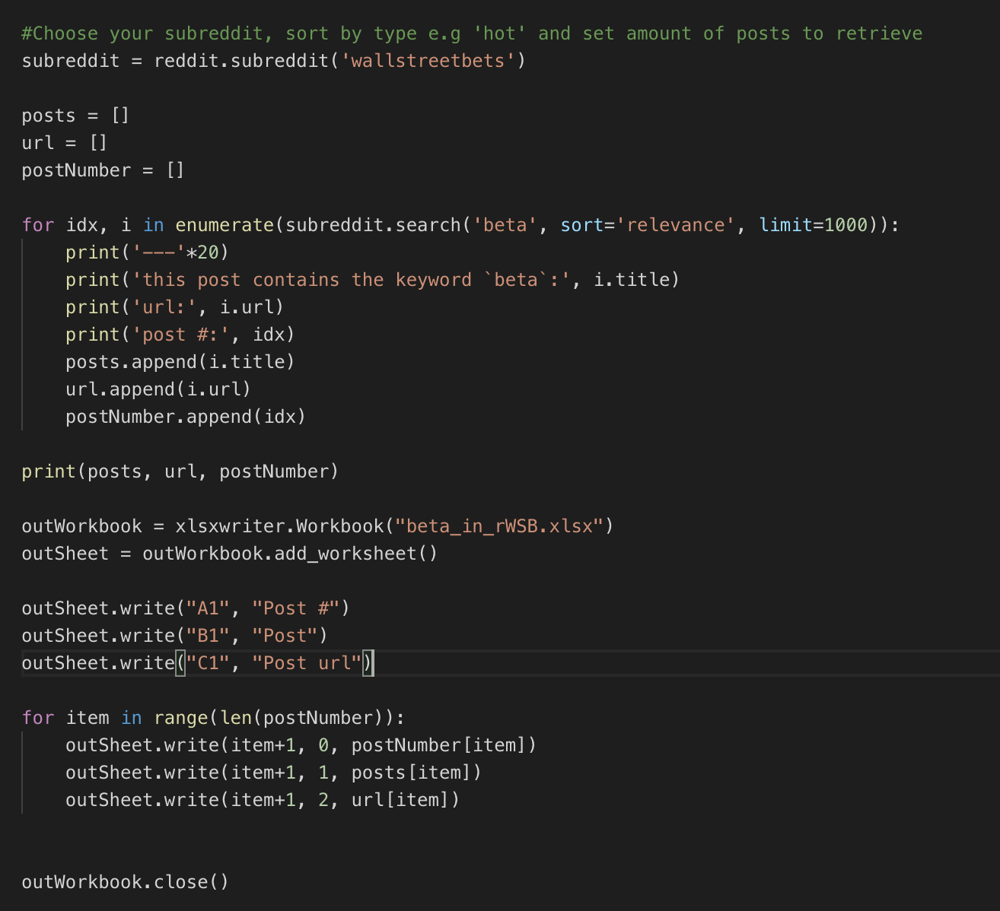
Python code using the PRAW module to search through posts containg the keyword "beta." posts, url and postNumber are stored in empty list variables which are then used with the xlsxwriter module to create an xlsx file.
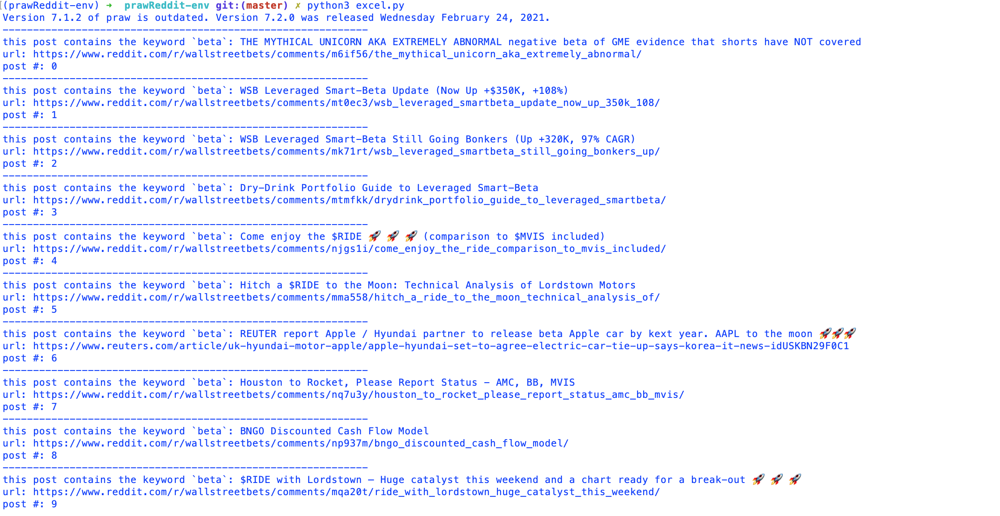
Testing the retrieved data in the terminal
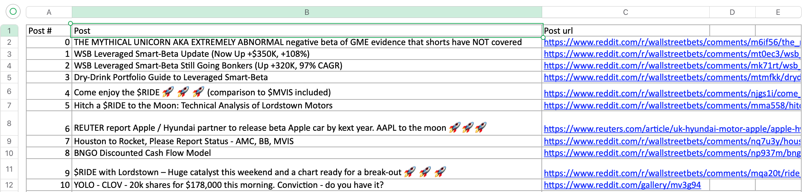
xlsx file created
An application to trade virtual business cards
MERN
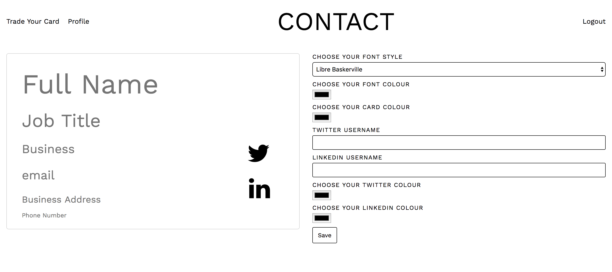
User Interface of Creating a Card
How it works: Users register and are prompted to create their profile (Virtual Business Card.) The fields contain Name, Job title, email address and telephone number. After your profile has been created you can request other user’s cards by sending them a text message. Your collected cards are stored in your collection to view at any time you want.
React was used to build the front-end and an Express setup was used for the back-end. An SMS API called Twilio was used for the trading aspect between users. The app uses a form to create the user’s own personalised card, allowing them to choose the font, font colour and card colour for their business card. The card also includes links to the users LinkedIn and Twitter profiles if they wish to add them. I’m particularly happy with the styling for this project; the card is updated live as the user fills out their customisation options using inline styles. When a user trades a card with another user, both cards are added to the respective user’s index; this was done through a function called cardsTrade in the controller for the cards. If a user edits their card, the updated version is displayed across indexes. Technologies include: React, Express, JavaScript, jQuery, HTML, SASS, Bootstrap, Web Hack, npm, Yarn, Git, Github, Heroku, Insomnia, mocha, chai.
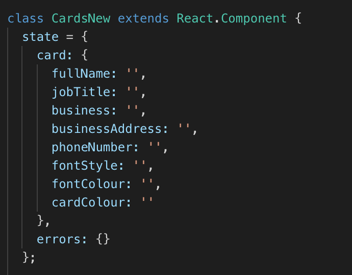
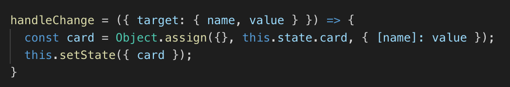
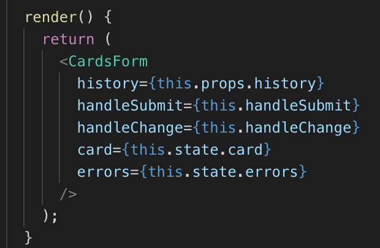
Inline Styling Code to update the changes to the card live
The points mentioned above are how far I got developing the app as an MVP. Ideally you’d want a smoother user experience, one that doesn’t involve entering the persons phone number in order to trade cards. If I were to continue building this app, the next iteration would have an API which uses Near Field Communication technology instead of the Twilio API for the Cards to be traded “between devices” at close proximity. I would also develop this iteration mobile-first.